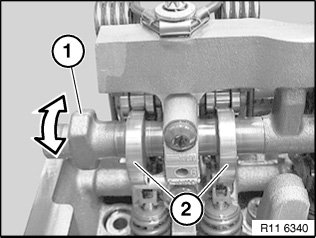
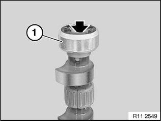
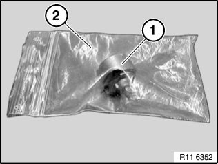
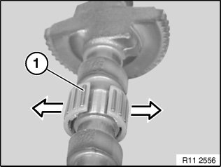
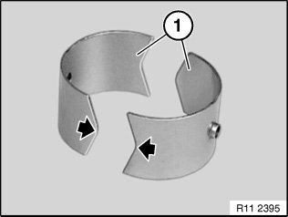
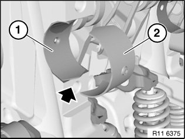
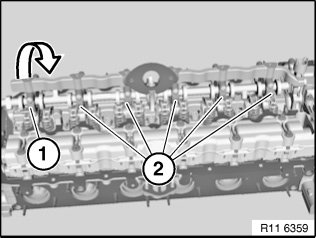
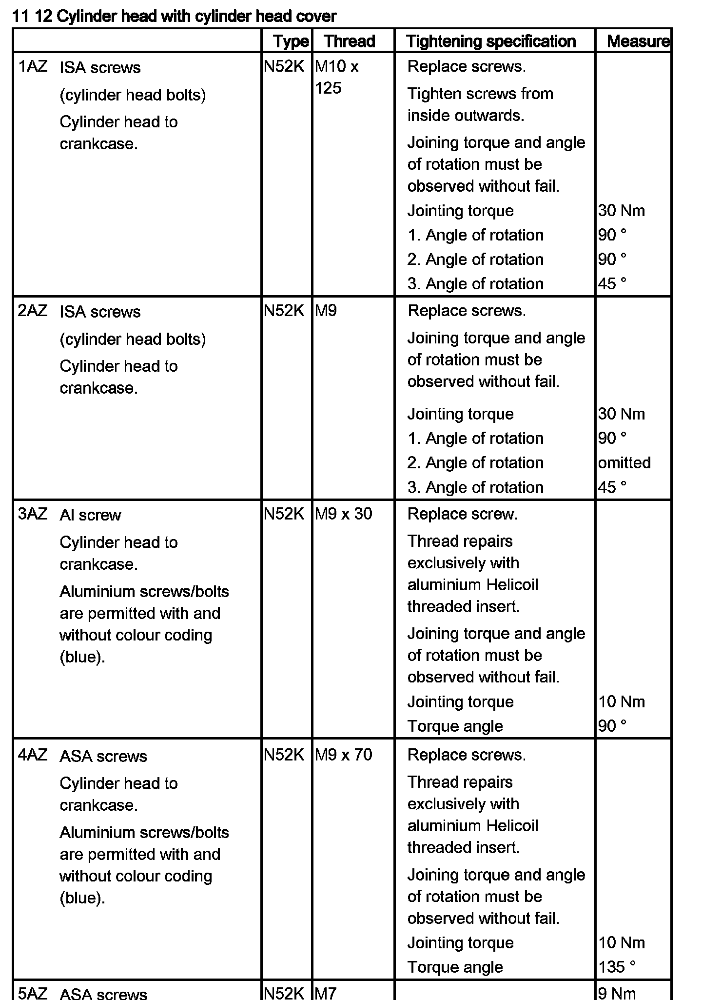

<!DOCTYPE html>
<html>
  <head>
    <title>Removing and Installing/Replacing Eccentric Shaft — 2011 BMW 128i Coupe (E82) L6-3.0L (N52K) Service Manual | Operation CHARM</title>
    <meta name='description' content="Detailed repair manual for the 2011 BMW 128i Coupe (E82) L6-3.0L (N52K).">
    <link rel='stylesheet' href="../style.css">
    <meta name='viewport' content='width=device-width, initial-scale=1.0' />
  </head>
  <body>
    <div class='theme-colors header'>
      <div class='branding'><b>Operation CHARM</b>: Car repair manuals for everyone.</div>
<div class=breadcrumbs><a class='breadcrumb-part' href="../">Home</a> <b>&gt;&gt;</b> <a class='breadcrumb-part' href="../BMW/">BMW</a> <b>&gt;&gt;</b> <a class='breadcrumb-part' href="../BMW/2011/">2011</a> <b>&gt;&gt;</b> <a class='breadcrumb-part' href="../index.html">128i Coupe (E82) L6-3.0L (N52K)</a> <b>&gt;&gt;</b> <a class='breadcrumb-part' href="0.html">Repair and Diagnosis</a> <b>&gt;&gt;</b> <a class='breadcrumb-part' href="0.html#Engine%2C%20Cooling%20and%20Exhaust/">Engine, Cooling and Exhaust</a> <b>&gt;&gt;</b> <a class='breadcrumb-part' href="0.html#Engine%2C%20Cooling%20and%20Exhaust/Engine/">Engine</a> <b>&gt;&gt;</b> <a class='breadcrumb-part' href="0.html#Engine%2C%20Cooling%20and%20Exhaust/Engine/Actuators%20and%20Solenoids%20-%20Engine/">Actuators and Solenoids - Engine</a> <b>&gt;&gt;</b> <a class='breadcrumb-part' href="285.html">Variable Valve Timing Actuator</a> <b>&gt;&gt;</b> <a class='breadcrumb-part' href="285.html#Service%20and%20Repair/">Service and Repair</a> <b>&gt;&gt;</b> <a class='breadcrumb-part' href="9206.html">Removing and Installing/Replacing Eccentric Shaft</a></div></div>
<div class="theme-colors floaty-message lemon-message">
  <b style="font-size: 1.5em; color: gold">Manuals through 2025 now available!</b>
  <br><br>
  Our trusted friends have launched a new website named LEMON, which has newer manuals. It also contains all the CHARM manuals.
  <br><br>
  LEMON is the spiritual successor to  CHARM, I recommend you try it!
  <br><br>
  Link: <a style='white-space: nowrap' href="../missing-page">lemon-manuals.la</a> or <a style='white-space: nowrap' href="../missing-page">lemon-manuals.org.ua</a>
  <br><br>
  (Some people have issue connecting. LEMON is investigating. For now, use Firefox or change your DNS server)
  <br><br>
  Or, hide this message: <a href="../missing-page">temporarily</a> or <a href="../missing-page">permanently</a>
</div>
<div class='main'>
<h1>Removing and Installing/Replacing Eccentric Shaft</h1><b>11 37 005 Removing and installing/replacing eccentric shaft (N52K)</b><br><br><span class='indent-2'>&#09;</span><b>Special tools required:</b><br><br><div class='oxe-image'></div><br><br><br><br><span class='indent-2'>&#09;</span><b>Necessary preliminary tasks:</b><br><span class='indent-2'>&#09;</span>^<span class='indent-5'>&#09;</span>Remove cylinder head cover<br><span class='indent-2'>&#09;</span>^<span class='indent-5'>&#09;</span>Remove intermediate lever<br><br><span class='indent-2'>&#09;</span>If necessary, move eccentric shaft (1) on twin surface to minimum lift (2).<br><br><div class='oxe-image'></div><br><br><br><div class='oxe-image'></div><br><br><br><br><span class='indent-2'>&#09;</span><b>Note:</b><br><span class='indent-2'>&#09;</span>All bearing caps (1 and 2) of eccentric shaft are marked with numbers from 1 to 6 (1 for 1st cylinder to 6 for 6th cylinder).<br><br><span class='indent-2'>&#09;</span>Bearing cap 6 (1) is provided with a stop.<br><br><span class='indent-2'>&#09;</span>Release screws on bearing cap 6 (1).<br><br><span class='indent-2'>&#09;</span>Release screws on bearing caps 1 to 5 (2).<br><br><span class='indent-2'>&#09;</span>Set all bearing caps down in special tool 11 4 481 in a neat and orderly fashion.<br><br><span class='indent-2'>&#09;</span>Remove eccentric shaft with gentle tilting and turning movements.<br><br><div class='oxe-image'></div><br><br><br><br><span class='indent-2'>&#09;</span><b>Important!</b><br><span class='indent-5'>&#09;</span>Screw is not magnetic and must be secured against falling down.<br><br><span class='indent-2'>&#09;</span>Release screw.<br><br><span class='indent-2'>&#09;</span>Remove magnet wheel (1).<br><br><div class='oxe-image'></div><br><br><br><br><span class='indent-2'>&#09;</span><b>Important!</b><br><span class='indent-5'>&#09;</span>Magnet wheel (1) is highly magnetic and must be protected against metal filings/borings.<br><br><span class='indent-2'>&#09;</span>After removing, place magnet wheel (1) in a plastic bag (2) with a seal.<br><br><div class='oxe-image'></div><br><br><br><br><span class='indent-2'>&#09;</span><b>Important!</b><br><span class='indent-5'>&#09;</span>Needle bearing (1) can break very easily.<br><br><span class='indent-2'>&#09;</span>Carefully pull needle bearing (1) apart at point of separation.<br><br><span class='indent-2'>&#09;</span>Remove all needle bearings (1) from eccentric shaft.<br><br><div class='oxe-image'></div><br><br><br><br><span class='indent-2'>&#09;</span>Install bearing shells (1) as pictured.<br><br><span class='indent-2'>&#09;</span><b>Note:</b><br><span class='indent-2'>&#09;</span>Always replace bearing shells (1) and needle bearings together.<br><br><span class='indent-2'>&#09;</span>Install bearing shell (1) with tip facing down (see arrow) in cylinder head.<br><br><div class='oxe-image'></div><br><br><br><br><span class='indent-2'>&#09;</span>Install bearing shell (2) with tip facing up in bearing cap.<br><br><div class='oxe-image'></div><br><br><br><br><span class='indent-2'>&#09;</span><b>Note:</b><br><span class='indent-2'>&#09;</span>All bearing caps (1 and 2) of eccentric shaft are marked with numbers from 1 to 6 (1 for 1st cylinder to 6 for 6th cylinder).<br><br><span class='indent-2'>&#09;</span>Bearing cap 6 (1) is provided with a stop.<br><br><span class='indent-2'>&#09;</span>Insert eccentric shaft.<br><br><span class='indent-2'>&#09;</span>Adjust eccentric shaft on dihedron to minimum stroke.<br><br><span class='indent-2'>&#09;</span>Fit all bearing caps (1 and 2).<br><br><span class='indent-2'>&#09;</span>Insert all screws.<br><br><span class='indent-2'>&#09;</span>Tightening torque 11 12 7AZ.<br><br><span class='indent-2'>&#09;</span><b>Installation:</b><br><span class='indent-2'>&#09;</span>Spline teeth of eccentric shaft must be greased with Longtime PD 1 (2.2).<br><br><span class='indent-2'>&#09;</span>Assemble engine.<br><br><div class='oxe-image'></div><br><br><br><br><h3>�
u:</h3><div class='oxe-image'></div><br><br><br></div>
<div class="theme-colors footer">
  <i>pro multis</i> · <a href="../about.html">About Operation CHARM</a>
</div>
<script src="../script.js"></script>
</body>
</html>
